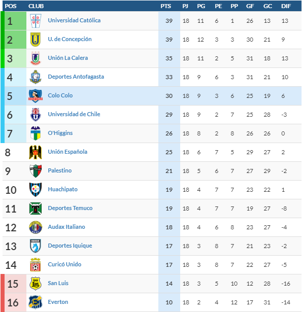

<!--
  Generated template for the PosicionPage page.

  See http://ionicframework.com/docs/components/#navigation for more info on
  Ionic pages and navigation.
-->
<ion-header>

    <ion-navbar>
        <ion-title>Tablas de Posiciones</ion-title>
    </ion-navbar>

</ion-header>


<ion-content padding>
    <div padding>
        <ion-segment [(ngModel)]="serie">
            <ion-segment-button value="general">
                Gral.
            </ion-segment-button>
            <ion-segment-button value="tercera">
                3a
            </ion-segment-button>
            <ion-segment-button value="segunda">
                2a
            </ion-segment-button>
            <ion-segment-button value="senior">
                S
            </ion-segment-button>
            <ion-segment-button value="primera">
                1a
            </ion-segment-button>
        </ion-segment>
    </div>

    <div [ngSwitch]="serie">
        <ion-list *ngSwitchCase="'general'">
            <ion-item>
                
            </ion-item>
        </ion-list>
        <ion-list *ngSwitchCase="'tercera'">
            <ion-item>
                <ion-grid>
                    <ion-row class="rowCabecera">
                        <ion-col col-1>
                            POS
                        </ion-col>
                        <ion-col col-6>
                            CLUB
                        </ion-col>
                        <ion-col col-1>
                            PTS
                        </ion-col>
                        <ion-col col-1>
                            PJ
                        </ion-col>
                        <ion-col col-1>
                            PG
                        </ion-col>
                        <ion-col col-1>
                            PE
                        </ion-col>
                        <ion-col col-1>
                            PP
                        </ion-col>
                    </ion-row>
                    <ion-row class="rowData" *ngFor="let pos of posiciones">
                        <ion-col col-1>
                            {{pos.pos}}
                        </ion-col>
                        <ion-col col-6>
                             {{pos.club}}
                        </ion-col>
                        <ion-col col-1 class="col-pts">
                            {{pos.pts}}
                        </ion-col>
                        <ion-col col-1>
                            {{pos.pj}}
                        </ion-col>
                        <ion-col col-1>
                            {{pos.pg}}
                        </ion-col>
                        <ion-col col-1>
                            {{pos.pe}}
                        </ion-col>
                        <ion-col col-1>
                            {{pos.pp}}
                        </ion-col>
                    </ion-row>

                </ion-grid>
            </ion-item>
        </ion-list>

        <ion-list *ngSwitchCase="'segunda'">
            <ion-item>
                <h2>segunda</h2>
            </ion-item>
        </ion-list>
        <ion-list *ngSwitchCase="'senior'">
            <ion-item>
                <h2>senior</h2>
            </ion-item>
        </ion-list>
        <ion-list *ngSwitchCase="'primera'">
            <ion-item>
                <h2>primera</h2>
            </ion-item>
        </ion-list>
    </div>
</ion-content>